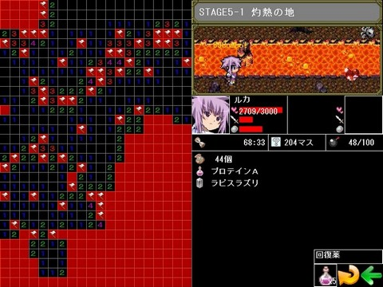
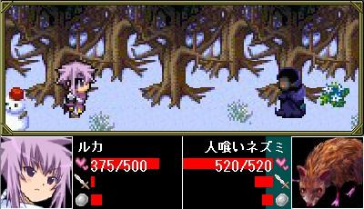
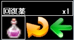
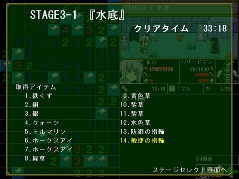

■３．１０ 探索画面
| |

| １．探索画面 |
| |
画面の左側で主人公のハルがダンジョンの探索（マインスイーパー）を、右上ではヒロインのルカがモンスターとの先頭を行います。
プレイヤーは主にルカの残り体力に気を配りつつ、マップを制覇していきます。
地雷のマスを開ける、ルカのＨＰが０になる、制限時間を超えた（タイムアタックモードのみ）場合、探索失敗となります。
|
| ２．マインスイーパー画面 |
| |
マインスイーパー画面では、地雷の場所を予測し、地雷以外の全てのマスを空けることでクリアとなります。
左クリックでマスを開ける、右クリックでフラグを立てる、左クリック右クリック同時押しで周囲の安全なマスを空けることが出来ます。
開いたマスに数値が書かれていた場合、その数値はそのマスの周囲にある地雷の数を表しています。この数をヒントに、地雷のマスを予測しましょう。
地雷と予測したマスの上で右クリックすると、フラグを立てる事ができます。地雷の場所が一目でわかるため、効率の良い探索が可能となります。
また、フラグの立っているマス上で右クリックすると、フラグを畳むことが出来ます。ただしその場合「フラグペナルティー」が発生します。
|
| ３．戦闘画面 |
| |

戦闘画面では、ダンジョン内に現れるモンスターとルカが戦闘を行います。
プレイヤーが「
マスを開ける」、「フラグを立てる」の行動をとると、ルカはモンスターに攻撃します。
一定時間内に連続して攻撃を行うとコンボが発生します。コンボは最後に攻撃を行ってから４秒経つか、あるいは敵からの攻撃を受けると途切れます。
一度に沢山のマスを開けたり、コンボを多く繋ぐと攻撃の威力があがります。
プレイヤーが何もしないでいると、モンスターのステータス背景にあるゲージが溜まっていきます。このゲージが満タンまで溜まると、モンスターは攻撃をしかけてきます。このゲージはモンスターかルカのどちらかが攻撃を行うと０に戻ります。
ゲージの溜まるスピードはお互いの敏捷値に影響されます。
|
| ４．消費アイテム |
| |

アイテムの中には、バトル中に使用することで探索を有利に進められる物があります。 消費アイテムを持っている場合画面右下に消費アイテムのアイコンが表示されます。消費アイテムが複数ある場合、アイコンをクリック、または「Ｘキー」で消費アイテムを変更します。
消費アイテムを使用するには、ルカをクリックするか、「Ｚキー」を押します。アイテムによって使用するタイミングが違いますので、考えて使用しましょう。
|
| ５．レベルアップ |
| |
モンスターを倒すと経験値が手に入ります。経験値を一定値溜めるとルカがレベルアップします。
経験値はアイテムと違い、もし探索が失敗に終わっても蓄積されます。
|
| ６．フラグペナルティー |
| |
一度立てたフラグを畳むと、ペナルティーとしてルカがダメージを受けます。
フラグを立てる時は細心の注意を払いましょう。
|
| ７．リザルト画面 |
| |

ステージをクリアするとリザルト画面に移行します。
習得したアイテムの一覧が表示されます。黄色く表示されたアイテムは新しく発見したアイテムです。
アイテムは、リザルト画面から出る時にお金に換金されます。
※探索に失敗した場合はお金に監禁されません！
|
|
|